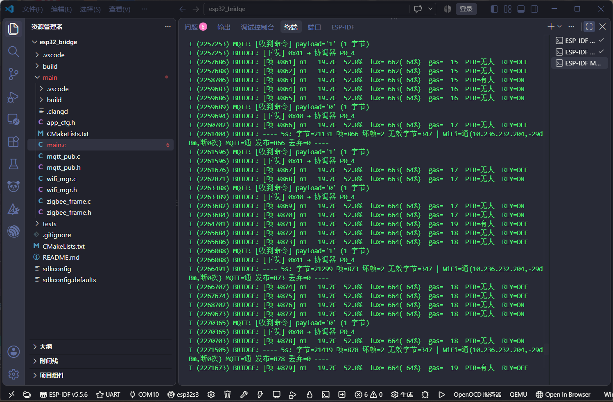

前面五步，数据都是单向的：节点采集，一路往上传，最后落在网页的曲线上。 第 5 步要把它变成双向——在网页上点一个按钮，让电池供电的终端节点吸合继电器。
这一步写完只花了一天，但前后改了三版才真正稳。 第一版命中率 25%，第二版反而把终端节点挤出网络， 第三版才做到 8 次命令 8 次命中。 两个失败版本的原因都指向同一件事：我对「这个终端其实是休眠设备」这件事一直是错的。
这一阶段的源码在
code/linux_gateway/：
MQTT 报文拼装在 gw_cmd.c，接口在 http_srv.c 的
/api/cmd，网页控制在 web/index.html。
协调器与终端的改动在 coordinator.c / enddevice.c（Z-Stack 工程，不在本仓库内）。
一、整条链路有五段，每段都有独立的观察点
远控最容易犯的错是「点了没反应就开始改代码」。这段链路有五段， 任何一段断掉，现象都是「继电器不动」——但原因完全不同。 所以先把每一段的可观测信号定下来：
| # | 这一段 | 怎么确认它通了 |
|---|---|---|
| 1 | 浏览器 → gw 的 HTTP |
页面 #ctlmsg 显示绿色「已发『吸合』」；curl "/api/cmd?v=1" 返回 {"ok":true} |
| 2 | gw → mosquitto |
mosquitto_sub -t 'zigbee/node1/cmd' -v 能收到那条 1 |
| 3 | mosquitto → ESP32 | ESP32 串口打 [收到命令] payload='1' 和 [下发] 0x41 → 协调器 P0_4 |
| 4 | ESP32 → 协调器（UART1） | 协调器 LED1 快闪 3 下（这是本版加进去的版本指示器，见第六节） |
| 5 | 协调器 → 终端 → 继电器 | 终端屏幕 RLY 变 ON，能听到继电器「咔」 |
命令编码早就定好了，就在 GenericApp.h 里：
STO_MASK 0xc0（仓库号）+ DEV_MASK 0x30（设备号）+ CMD_MASK 0x0f（动作）。
一个字节就够，0x41 = 节点 1 · 继电器 · 吸合，0x40 = 断开。
二、下行只能另开一路串口，因为 P0_2 上已经有人抢线
上行用的是 UART0（P0_3 发、P0_2 收）。按直觉，下行应该从 ESP32 发进
P0_2。但 P0_2 这根线上同时接着 CH340 的 TXD——
也就是 USB 转串口那一路。
所以下行改用 UART1：P0_5 在协调器板上只引到 P4 排针，
没接任何外设，正好空着。一条飞线 GPIO17 → P0_5 加一根地线就够。
这里有个反直觉的坑：UART1 的 RX/TX 和 UART0 是反的
UART0 备用位置 1 是「低脚收」——P0_2（RX，低位）/P0_3（TX，高位）。
把这个规律套到 UART1 上，会以为 P0_4 是 RX。错了：
| RX | TX | |
|---|---|---|
| UART0 · 备用位置 1 | P0_2（低脚） | P0_3（高脚） |
| UART1 · 备用位置 1 | P0_5（高脚） | P0_4（低脚） |
UART1 是高脚收。依据是 CC2530 中文手册表 7-1（第 73 页），
USART1 的 UART 那一行 P0 部分写的是 P0_5=RX / P0_4=TX；
Z-Stack 自己的 _hal_uart_dma.c 里也有印证：
// Components/hal/target/CC2530EB/_hal_uart_dma.c:155 #define HAL_UART_PERCFG_BIT 0x02 // USART1 on P1, Alt-2
注意这句注释——PERCFG 那个位置 1 是跑到 P1 去（P1_7/P1_6，
正好是彩屏的 SCL/DC）。要用 P0，必须清位。
我第一次写成 PERCFG |= 0x02，结果一个字节都进不来，还顺手把彩屏搅了。
完整的初始化顺序
还有一处会互相覆盖：APCFG 的优先级高于 P0SEL（手册 7.6.6）。
P0_4/P0_5 恰好是 ADC 的 A4/A5，不先把 APCFG 里那两位清掉，
光设 P0SEL 是不生效的。
/* 顺序不能换，每一步都有原因 */ APCFG &= ~0x30; /* ① 先关 ADC 功能，APCFG 覆盖 P0SEL */ P0SEL |= 0x30; /* ② P0_4 / P0_5 → 外设功能 */ P0DIR &= ~0x30; /* ③ 两个都设输入 */ PERCFG &= ~0x02; /* ④ U1CFG=0 → 位置 1 = P0_5(RX)/P0_4(TX) */ U1UCR = 0x02; /* ⑤ 8N1 */ U1CSR = 0x80; /* ⑥ UART 模式，收发先关 */ U1BAUD = 216; /* ⑦ BAUD_M */ U1GCR = 11; /* ⑧ BAUD_E → 115200 */ U1CSR |= 0x40; /* ⑨ 只开 RX，TE 保持 0 */
收字节靠 U1CSR 的 bit2（0x04）判断，读 U1DBUF 会自动清标志。
P2DIR.PRIP0 我故意没动——它决定 USART0 和 USART1 谁优先，
动了有可能把已经跑通的上行抢掉。下行慢一点无所谓，上行不能丢。
三、第一版：命中率 25%，因为广播根本不保证送达
第一版是照原版例程写的：目的地址 AddrBroadcast（0xFFFF），发一包完事。
实测控制率大约一半，甚至更差。
我第一轮老老实实数了 20 次命令，只成功 5 次——25%。 看起来像硬件坏了，其实是协议本身不保证。
四、第二版：为了治丢包重发 5 次，结果把终端挤出网络
知道「广播必丢」之后，修法很自然：改成单播，并且多发几遍。
短地址从终端自己上报的帧里抄（pkt->srcAddr.addr.shortAddr），
终端重新入网换了地址也会自动更新。
第一版重发我写成 for 循环连发 3 次，实测只有 47%——几乎没改善。
原因很清楚：三次调用在同一毫秒进 MAC 队列，信道拥堵时它们撞的是同一段坏时间，
一起丢。等于还是只发了一次。
于是第二版改成状态机：隔 200ms 补发 4 次，共 5 包跨 800ms。 理论上全丢概率能压到万分之一。这次命中率确实上去了， 但冒出一个更严重的问题——
「只要在网里就 100%」这句话是解题的钥匙：说明单包本来必达，那 5 包重发全是白加的负担。 问题不在无线质量，在负担本身。
根因：这个终端是休眠设备，不是常开电台
f8wConfig.cfg 里有几项终端专用配置，它们决定了这件设备的真实行为：
| 配置项 | 值 | 意味着什么 |
|---|---|---|
RFD_RCVC_ALWAYS_ON | FALSE | 射频不是常开，可以睡 |
POLL_RATE | 1000 | 每 1 秒才问父节点一次「有我的消息吗」 |
QUEUED_POLL_RATE | 100 | 取到一条后 100ms 内再问一次（补队列） |
NWK_INDIRECT_MSG_TIMEOUT | 7 秒 | 父节点替它代收缓存，只留 7 秒 |
MAX_POLL_FAILURE_RETRIES | 2 | 连续 2 次问不到父节点就判失同步 |
所以给休眠终端发单播命令，真正发生的不是「把帧打到空中」， 而是「塞进父节点的间接消息队列（默认只放 8 条），等它下次 poll 时再交给它」。于是：
你按一次按钮 ├─ 协调器往代收队列塞 5 条（每 200ms 一条） ├─ 终端 1 秒才取 1 条 → 要 5 秒才清空 ├─ 手快再按两下 → 队列撞到 8 条上限 ├─ 协调器忙着重发 + 等 APS 确认，来不及回终端的 poll └─ 终端连问 2 次没人应 → 判定失同步 → 退网重连
还有一个放大的因素：APSC_ACK_WAIT_DURATION_POLLED 被配成 3000，
单位是 2ms，也就是协调器每发一包要挂一个最长 6 秒的 APS 确认事务。
5 包 = 5 个事务同时挂着，APS/MAC 资源被占住，进一步拖慢对终端 poll 的响应。
五、第三版：2 包 / 1000ms，把 APS 确认关掉
结论就是「减负到刚好」——重发次数和间隔都对齐终端的 poll 周期：
/* coordinator.c */ #define COORD_CMD_RETRY 1 /* 首次之外只补发 1 次（总共 2 包） */ #define COORD_CMD_RETRY_TICKS 20 /* 20 × 50ms = 1000ms，对齐 POLL_RATE */ /* 发送时 options 参数给 0，不再要 AF_ACK_REQUEST */ AF_DataRequest( &dst, &GenericApp_epDesc, GENERICAPP_CLUSTERID, 1, &cmd, &GenericApp_TransID, 0, AF_DEFAULT_RADIUS );
为什么 2 包就够：第 1 包在终端下一次 poll 时被取走，
取走之后 QUEUED_POLL_RATE 会让它 100ms 内再问一次，正好接走第 2 包。
队列里最多同时存在 2 条，100ms 就清空，撞不到 8 条上限。
六、加了一个 LED1 版本指示器，因为「没烧进去」看起来和「烧错了」一样
调试过程中我两次拿旧固件当新固件测——现象上完全看不出来， 因为旧版和新版在串口日志里一模一样。浪费的时间比写代码还多。 所以这一版给协调器加了一眼可辨的信号：
| 收到命令后 LED1 的表现 | 含义 |
|---|---|
| 快闪 3 下 | 新固件，且已拿到终端地址、走单播 |
| 常亮约 0.4 秒 | 新固件，但还没学到终端地址，退化成广播 |
| 只翻转一下，不闪 | 还是旧固件，压根没烧进去 |
第三种情况就是当时要排除的。看到「只翻转不闪」，直接重烧，不用再猜。
七、验收：8 次命令 8 次命中，50 帧无断档
烧完协调器后从网页和 MQTT 两条路各发几轮命令，ESP32 串口日志如下
（payload 来自 MQTT，帧 来自上行数据）：
I (2257253) MQTT: [收到命令] payload='1' I (2257253) BRIDGE: [下发] 0x41 → 协调器 P0_4 I (2257686) BRIDGE: [帧 #861] n1 19.7C 52.0% lux=662(64%) gas=15 PIR=无人 RLY=OFF I (2257688) BRIDGE: [帧 #862] n1 19.7C 52.0% lux=662(64%) gas=15 PIR=无人 RLY=OFF I (2258706) BRIDGE: [帧 #863] n1 19.7C 52.0% lux=663(64%) gas=15 PIR=有人 RLY=ON I (2259683) BRIDGE: [帧 #864] n1 19.7C 52.0% lux=663(64%) gas=16 PIR=无人 RLY=ON I (2259689) MQTT: [收到命令] payload='0' I (2259694) BRIDGE: [下发] 0x40 → 协调器 P0_4 I (2260702) BRIDGE: [帧 #866] n1 19.7C 52.0% lux=663(64%) gas=17 PIR=无人 RLY=OFF I (2261404) BRIDGE: ---- 5s: 字节=21131 帧=866 坏帧=2 无效字节=347 | WiFi=通(-29dBm,断0次) MQTT=通 发布=866 丢弃=0 ----
各项数字：
| 指标 | 结果 |
|---|---|
| 命令命中率 | 8 / 8（100%），4 次吸合、4 次断开 |
| 帧连续性 | #856 → #905，50 帧无断档，终端全程没退网 |
| 坏帧 | 900 帧里 3 个（0.33%），无效字节 只涨了 24 —— 正好一帧 |
| WiFi | 断 0 次，RSSI −29 ~ −40dBm |
| MQTT | 发布=902 丢弃=0 |
| Linux 入库 | 有效帧=37 入库=37 库错=0，库内累计 1058 条 |
这是 Ubuntu 上的控制演示（手机竖屏拍摄，能听到继电器动作）：
mosquitto_pub 发命令，协调器 LED1 快闪、终端屏幕 RLY 翻转。
注意从发出命令到继电器响有 1 秒左右的延迟——这是休眠终端 POLL_RATE=1000 的固有代价
这是网页端的控制演示（录屏，点按钮直接操作）：

下发 0x41 之后两三帧内必然出现
RLY=ON；统计行 丢弃=0；坏帧 一直是 2 没涨
八、诚实说明：延迟是 1~2.6 秒，不是「瞬间」
把命令时间戳和状态翻转的帧时间戳对齐，实测四次的延迟：
| 下发时刻 | RLY 翻转时刻 | 延迟 |
|---|---|---|
| 2257253 | 2258706 | 1.45 s |
| 2261596 | 2262871 | 1.28 s |
| 2266088 | 2268702 | 2.61 s |
| 2272947 | 2274703 | 1.76 s |
这是休眠终端的设计代价，不是缺陷：它一秒才醒一次，命令最快也要等下一个 poll 周期。 2.61 秒那次是命令正好卡在两个 poll 之间、第 1 包没赶上、 等第 2 包（1 秒后补发）才被取走。
要更快只有两条路，都要重烧终端：把 POLL_RATE 降到 500（延迟砍半，功耗上升），
或者干脆 RFD_RCVC_ALWAYS_ON = TRUE（射频常开，命令直达，
但功耗从微安级跳到 30mA 上下，电池撑不过一天）。
插着 USB 的时候感觉不到差别，拔了电池就是另一个项目了。
所以这一版保持 1000 不动。
九、Linux 侧：手写 MQTT 报文，不装 libmosquitto
gw 要主动发一条消息，最省事的做法是链 libmosquitto。
但这台 Ubuntu 16.04 上自带的 mosquitto 是 1.4.8，
对应的 -dev 包和现在的 API 差得不少，装上去反而多一层不确定。
而这里要发的其实只有两种报文，格式是公开且稳定的：
CONNECT 0x10 + 剩余长度 + 00 04 "MQTT" 04 02 00 3C + clientId PUBLISH 0x30 + 剩余长度 + topic 长度(2字节) + topic + payload
剩下的事就是裸 socket：getaddrinfo → 非阻塞 connect →
select 等可写 → 用 SO_ERROR 复查一次。
最后一步很关键，非阻塞 connect 返回 0 或者 EINPROGRESS 都不代表成功，
SO_ERROR 才是真的答案。
0x20 0x02 0x00 0x00 这四字节是「broker 到底在不在」的唯一可靠判据。
只发不读的话，把 broker 停掉、把密码填错、把端口改错，
本地全都是「发送成功」——而消息一条都没发出去。
这套拼包逻辑写成了纯函数，所以可以在没有网络的机器上做逐字节断言：
tests/test_cmd.c 里 20 项，全部拿标准报文对照，
连「主题长到剩余长度需要两字节变长整数」这种情况也覆盖了（0x85 0x01）。
加上原有的 178 项，离线断言总数变成 198 项，不需要任何硬件就能跑：
$ make test ... 通过 198 项，失败 0 项
十、已知限制
- 没有 CRC，靠帧头 + 字段范围校验。一个字节被打歪就可能触发整帧丢弃， 实测丢帧率 0.3%~3%，取决于线路质量。这是设计时就接受的代价。
- 命令有 1~2.6 秒延迟，原因在休眠终端的 poll 周期，见第八节。
-
/api/cmd用的是 GET，按 REST 惯例改状态的接口应该是 POST。 这里选择 GET 是因为网页端fetch和curl都更省事， 而且这个接口本身就是幂等的（重复发v=1结果一样）。属于刻意的取舍，不是疏忽。 -
网页 HTML 已经 14739 字节，逼近
HTTP_RESP_MAX（16384）的上限。 再往里加功能之前必须先精简页面，否则会被截断成半张。 - 没做掉线续传。曾经想过在 ESP32 上缓存断网期间的数据、恢复后补发， 最后决定不做：几百条数据挤在同一秒补发，曲线上会形成一个假台阶， 比丢数据更误导人。
十一、这轮的收获
- 「只要在网里就 100%」这句话本身就是诊断结论。 它一次性排除了无线质量、排除了天线、排除了距离， 把问题锁死在「我们的发送方式」上。观测到一个稳定的边界条件， 比多测十次都有用。
- 同一个手法，换个设备类型可能就是反作用。 间隙重发对广播是对的——广播没人回 ACK，你不重发就是赌运气。 但对休眠单播是错的——父节点本来就替你缓存着，你重发只是往那个 8 条的队列里堆垃圾。 「重发」这个词背后，要问的是「谁替我保证送达」。
-
协议栈的默认值全都是「假设你知道自己在干什么」。
MAX_POLL_FAILURE_RETRIES = 2意味着 2 秒问不到父节点就退网重连。 写应用层的时候如果不知道这个数，就会把「退网」归因到硬件、天线、干扰上， 而真正的原因是自己把父节点忙死了。 - 调试工具本身要能自证。 LED1 那个「快闪 3 下 / 常亮 0.4 秒 / 只翻转一下」三态指示器， 解决的不是功能问题，是「我到底有没有烧进去」这个元问题。 两次拿旧固件当新固件测的代价，比加这段代码高得多。
-
看起来是「数据库坏了」的报错，八成是「有两个我在跑」。
insert: database is locked出现时，第一反应不该是修 SQL， 而是先ps aux | grep数一下有几个进程。 这次就是前一个手动启动的实例还活着，占着库；杀掉之后入库=37 库错=0。 -
能不用库就不用库。
为了发两种固定格式的报文去装一个
-dev包， 换来的是版本耦合和一堆看不见的初始化行为。 手写 60 行、配 20 项逐字节断言，反而更可控、更好测。